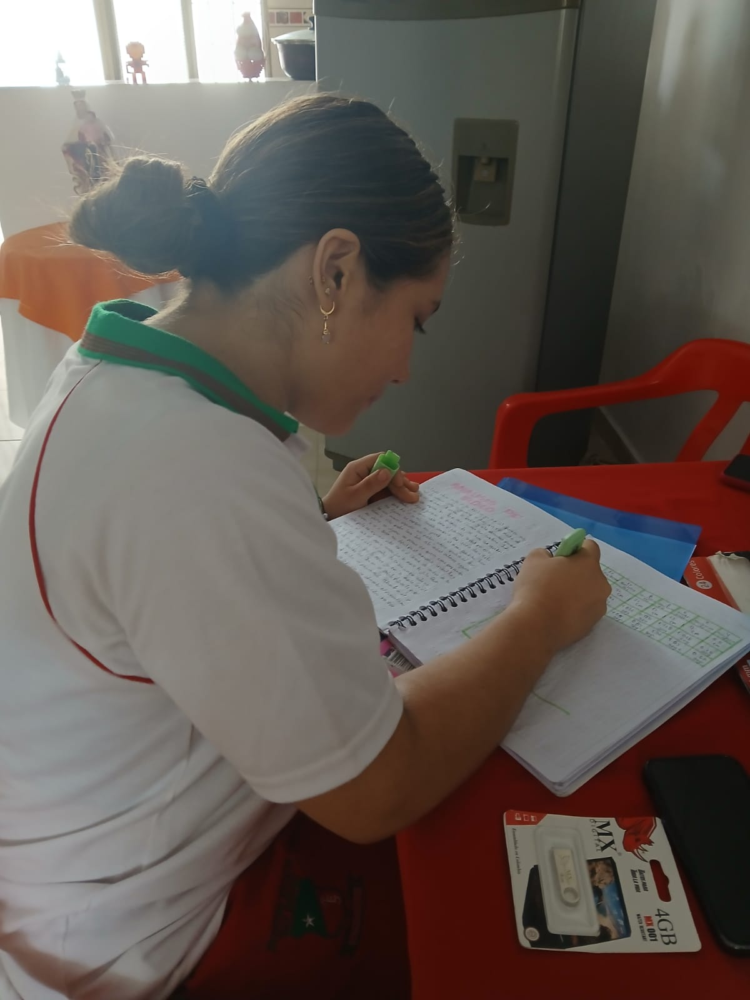
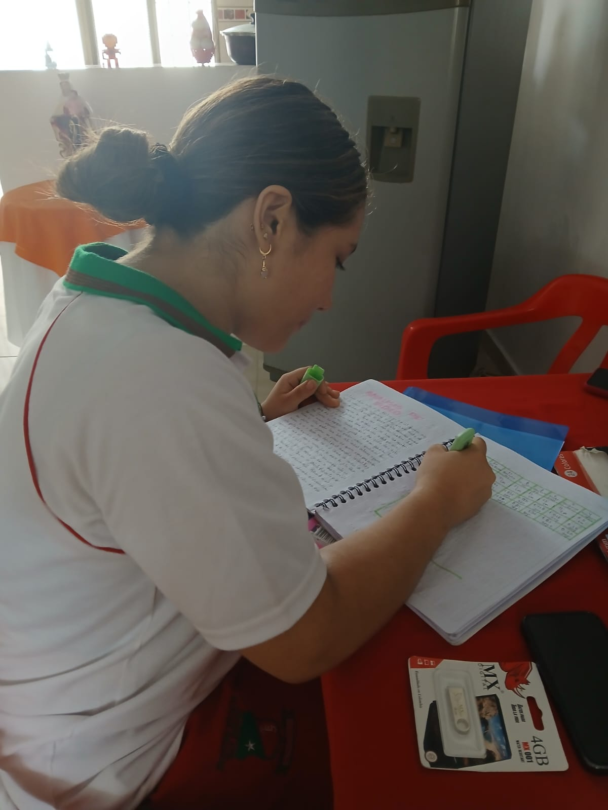

LAS SUPERPODEROSAS
Yo soy Geral, tengo 16 años.

Yo soy Sofia, tengo 16 años.

 

En casa, estudio.
Ordeno mi casa.
En casa hago mis tareas.
Barriendo obligado.
En la Estacion de policia
recibiendo una charla.
Confesandonos con el sacerdote.
Visitando la alcaldia de El Espinal.
Con nuestra hermana La Llorona.
VIDEO: